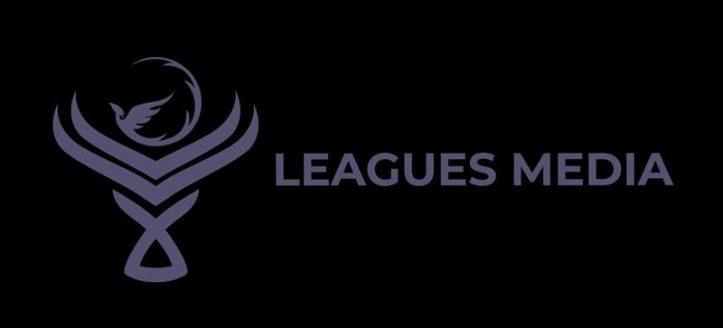
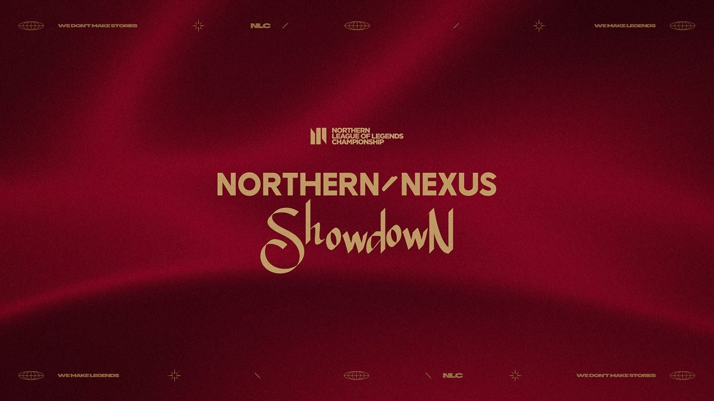

Product and growth operator from Bengaluru. Two stories so far: a Danish esports company I stayed with until the very last day, and an Indian gaming company that started as a Discord server.
250K+
peak live viewers at an event we built
200K
users acquired for a core product
$20K+
revenue in 10 months, from zero
60K+
organic visitors in one month
STORY I · 2024 — 2026
TILL THE LIGHTS WENT OUT
Leagues ApS, Copenhagen. A small Danish team running a gaming platform, a media house and the UK & Nordics League of Legends championship. I was there from the first week to the very last day.
PartnershipsProductBrandsGrowthSEOEvents
ACT IAPR 2024
Into the North
I joined Leagues remotely as Partnerships & Product Manager, which in a team this size meant wearing every hat. Leagues ran three things at once: Leagues.gg, an all-in-one platform for League of Legends, VALORANT and osu! players (tournaments, team finder and live stats); Leagues Media, its production and marketing arm; and the NLC, the Northern League of Legends Championship for the UK, Ireland and the Nordics.

ACT II2024 — 2026
Brands at the table
Esports runs on partners, so a lot of my time went into the brands behind the league and the events. That meant sitting across from household names, including KitKat, Riot's long-running sponsor across the European leagues, and working directly with them.
ACT IIIMAY — JUN 2025
We didn't just run finals. We threw a festival.
Leagues Disrupt took over K.B. Hallen in Copenhagen for two days: the NLC finals, live music, streamers co-streaming from the venue, an expo floor, giveaways and community meetups. A brand-new kind of esports event for Northern Europe, and it broke the league's records.
250K+peak concurrent viewers on Twitch
3,000fans in a packed K.B. Hallen
550Khours watched
100M+partner logo impressions
4MVOD views
ACT IVJUL 2025
Opening the gates
With Riot Games, we ran the Northern Nexus Showdown, an open qualifier "run in partnership with Leagues.gg and the NLC." Any team in Northern Europe could sign up on Leagues.gg, fight through a Swiss stage and playoffs in one weekend, and the winner flew to the LEC Finals in Madrid as VIPs.

Northern Nexus Showdown · NLC × Riot Games
ACT VAUG 2025
Stockholm, louder
Three months later we did it again, bigger: Leagues Disrupt Stockholm at Hovet Arena, with room for 5,000, the summer finals, an after-party, and the NLC's first-ever K-pop performance, from PRIMROSE. It even had its own anthem.
ACT VI2025
More than one league
The NLC was the headline, but it was never the whole job. Leagues also ran Danmark Ligaen, Denmark's national VALORANT league, together with Esport Danmark, plus community competitions on Leagues.gg and the official EMEA League of Legends and VALORANT Discord communities. On the platform side, I helped drive 200K users to a core product through partnerships, campaigns and platform-led initiatives.
ACT VIILATE 2025
Writing our way up
We built the content engine from scratch: blogs, guides and Leagues News, daily League of Legends esports coverage living on Leagues.gg. Search took notice, with 60K+ organic visitors in a single month.
ACT VIIIMAR 2026
The last split
After the 2026 Winter Split, Leagues told Riot it was "no longer in a position to operate the league." The Spring Split was postponed, and Riot went looking for a new organizer.
APR 2026 · THE END
THE LAST ONE STANDING
When Leagues ApS shut down and the team was let go, I was the final employee: there until the very end.
Two festivals, a national league, a Riot partnership, the brands and a content engine, all from a team small enough to fit in one room. I'd do it all again.
CaptainSide, Bengaluru. Co-Founder & COO. Six years, three lives, one idea: help the right players find the right games.
Co-founderOperationsGTMCommunityWeb3Product
ACT I2020
Two Iron players with a very big plan
It started with me and Sumit: two Iron-ranked VALORANT players, a brand-new Discord server in May 2020, and a completely unreasonable plan to win VCT.
We didn't win VCT. But we both climbed all the way to Immortal, and somewhere along the way the server turned into something bigger than the two of us: an Indian esports community hosting tournaments and creating "a meeting point between the web3, NFT space and gaming." It grew past 3,600 members. I hung up the mouse after Immortal. The community kept going.
ACT II2021 — 2023
A team, a tournament and a launchpad
The community became a Web3 game launchpad, then an esports organization with its own roster. In September 2023 we revealed the CAPTAIN SIDE VALORANT team ("This won't just be a Team, it'll be a Dynasty"), and it went 7–1 in its VALORANT Premier run that month.
We ran our own events too: the Captain Side Valorant Showdown, then Season 2 with 100 teams registered and a ₹50,000 prize pool, plus Weekly Wars, community days and game nights with real prizes on the line.
ACT III2023 — 2025
Going pro
CaptainSide became a company, incorporated as CaptainSide Esports Private Limited in 2024, offering tournament hosting, game marketing, community engagement and Web3 services to game studios.
As Co-Founder & COO, I defined our productized service offerings, pricing and go-to-market from scratch, ran operations, partnerships and client delivery end to end, and built campaigns, creator programs and community initiatives with developers and publishers, including blockchain gaming platforms growing in South Asia. We scaled to $20K+ in revenue in 10 months.
ACT IV2025 — NOW
Tinder, but for games
Every studio we worked with had the same problem: getting found. So we built the answer ourselves. captainside.com helps you "find your next game in 30 seconds" by swiping short gameplay clips from real players. No trailers, no PR, just real footage.
Around it: a YouTube channel with reviews and coverage, including India's room at Summer Game Fest and a collaboration with the official Borderlands account, plus the r/CaptainSide community and an Instagram that's posted 340+ times.